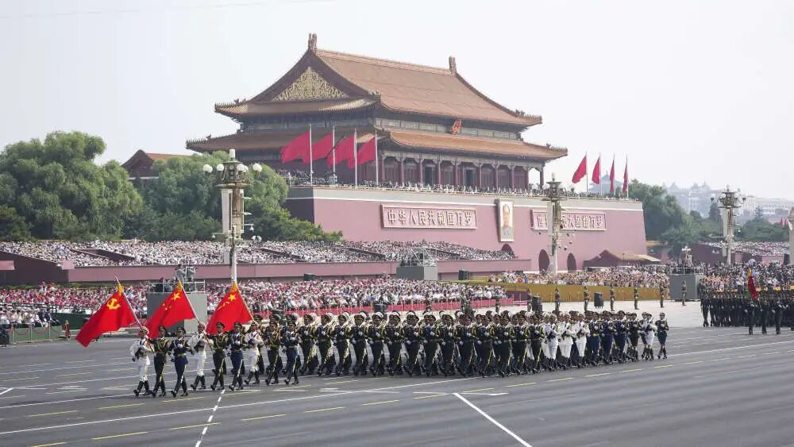
80年前，中国人民经过艰苦卓绝的浴血奋战，终于赢得了抗日战争的伟大胜利，世界反法西斯战争也随之胜利结束。这是中华民族近代以来反抗外敌入侵第一次取得完全胜利的民族解放战争，是世界反法西斯战争的重要组成部分。
"铭记历史、缅怀先烈、珍爱和平、开创未来"
八年浴血奋战，中华民族以3500万同胞的牺牲换来了最终胜利，铸就了不朽的民族精神
1931年九一八事变后，中国人民开始了艰苦卓绝的抗日战争。东北人民组织抗日义勇军，中国共产党领导的东北抗日联军成为坚持东北抗战的主要力量。
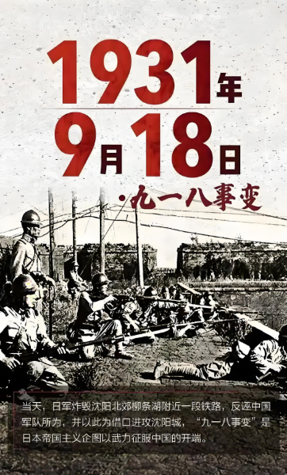
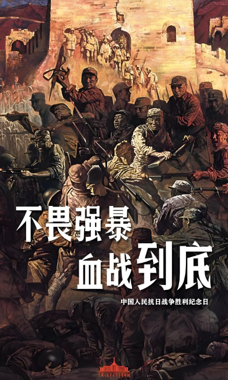
1937年七七事变标志着全面抗战的开始。在中国共产党倡导的抗日民族统一战线旗帜下，国共两党合作，全国各族人民奋起抵抗，经过八年浴血奋战，最终取得胜利。
1945年8月15日，日本宣布无条件投降。9月2日，日本代表在东京湾美军"密苏里"号战列舰上签署投降书。9月3日成为中国人民抗日战争胜利纪念日。
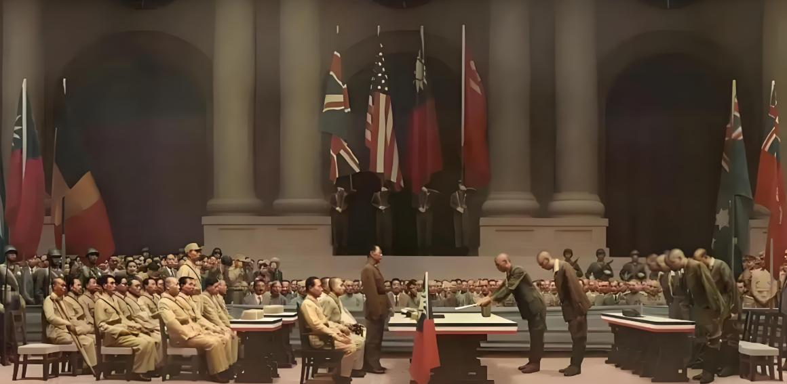
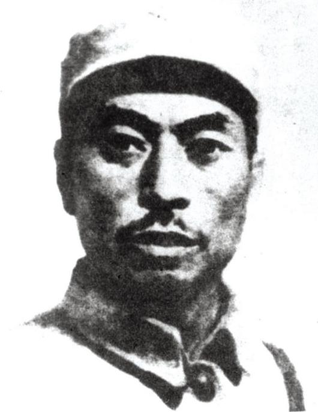
东北抗日联军的主要创建者和领导人，在极端艰难的条件下坚持抗日游击战争，直至壮烈牺牲。
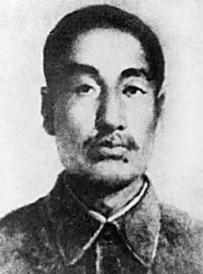
东北抗日联军创建人和领导人之一，指挥多次对日作战，给敌人以沉重打击，有"北国雄狮"之称。
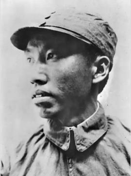
八路军的高级将领，抗日战争中牺牲的最高级别将领之一，为国家和民族的解放事业献出了宝贵生命。
中国在抗日战争中殉国的第一位高级将领，七七事变后指挥部队抗击日军侵略，壮烈牺牲。
胜利的荣光与和平的决心
2025年9月3日
北京天安门广场
纪念中国人民抗日战争暨世界反法西斯战争胜利80周年，彰显维护和平的坚定立场
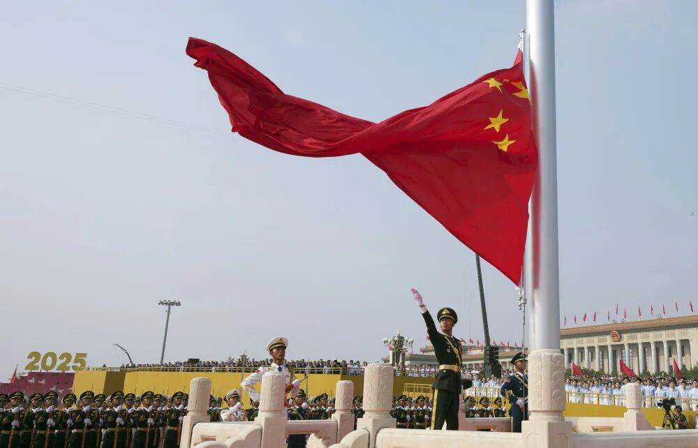
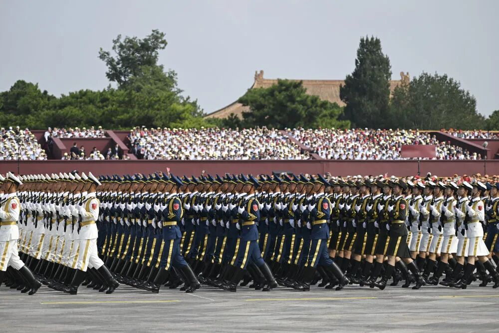
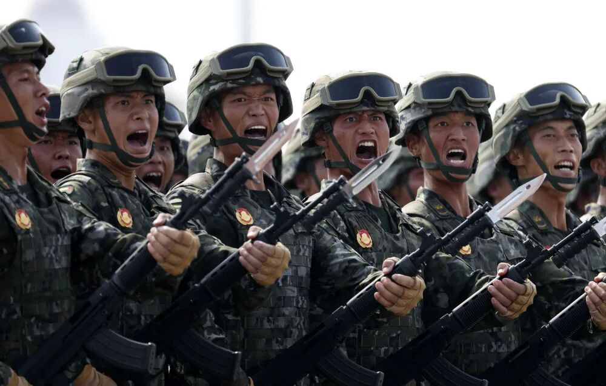
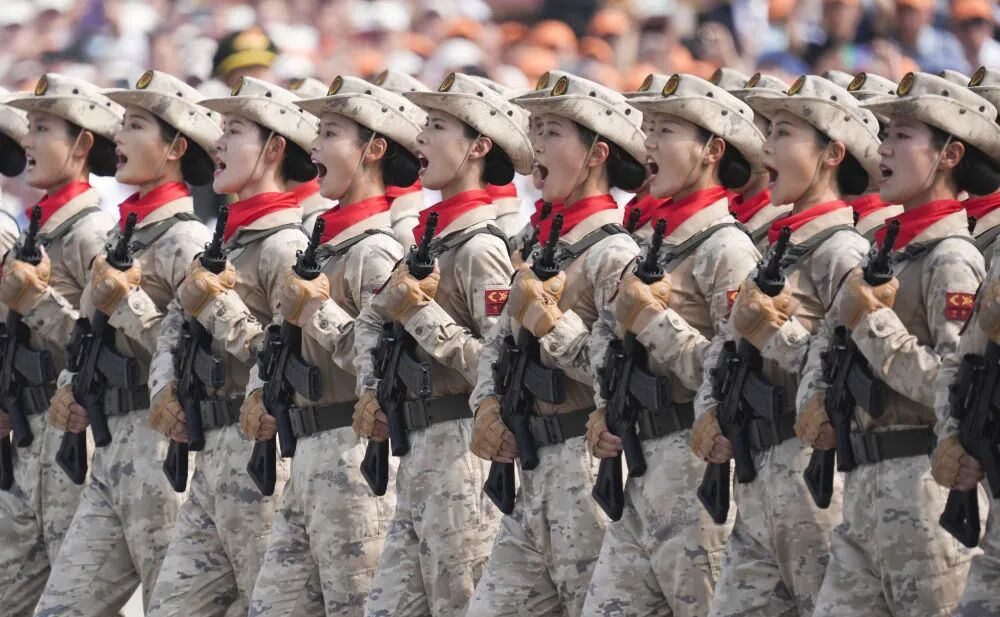
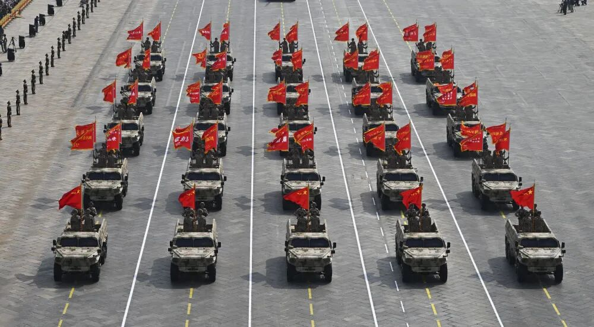
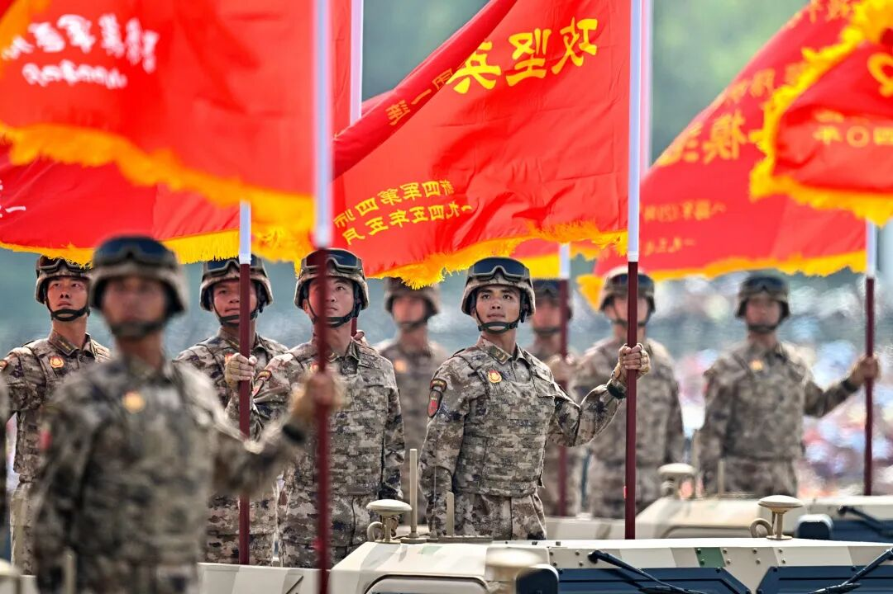
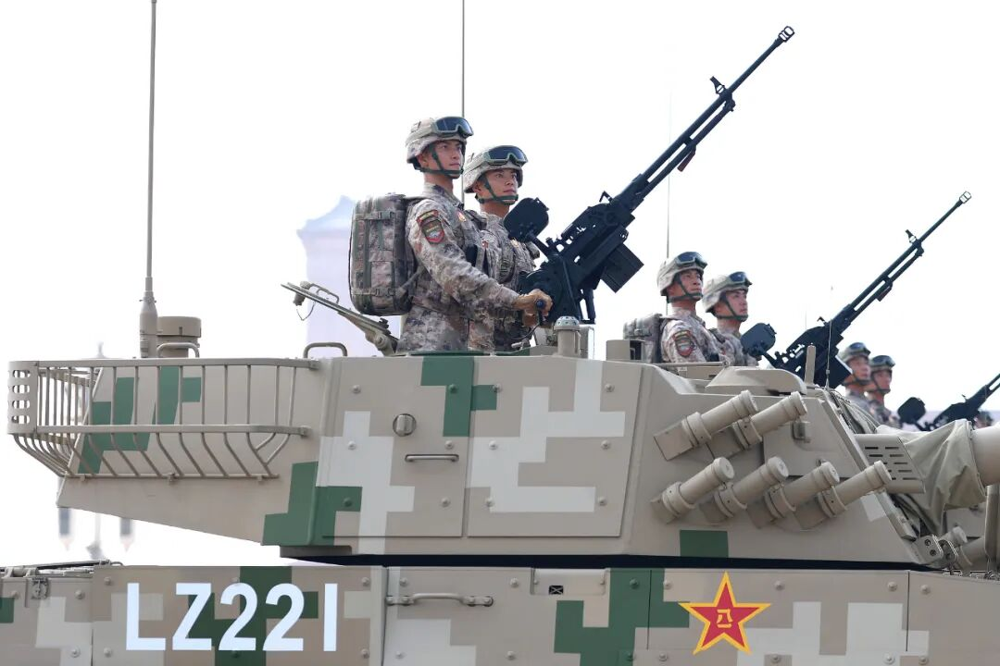
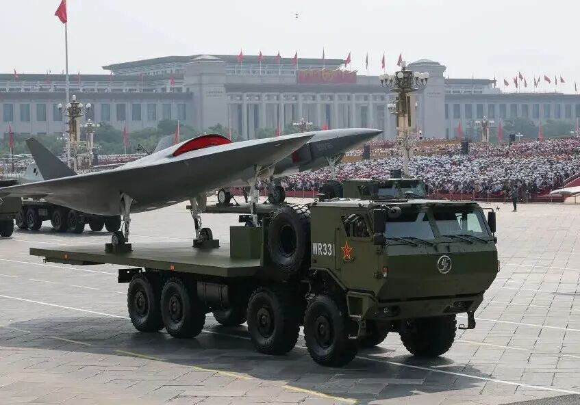
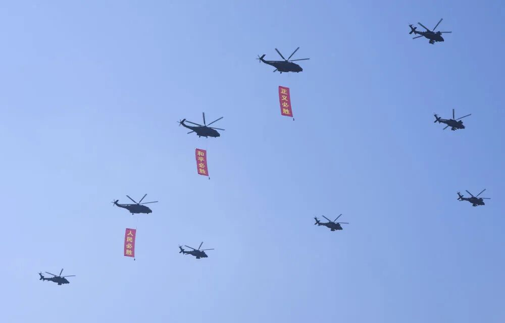
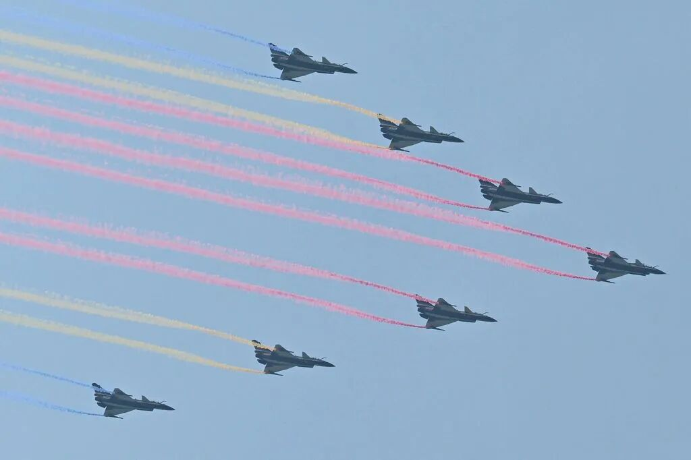
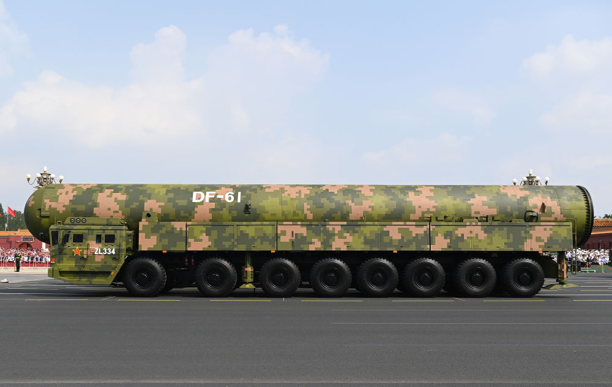
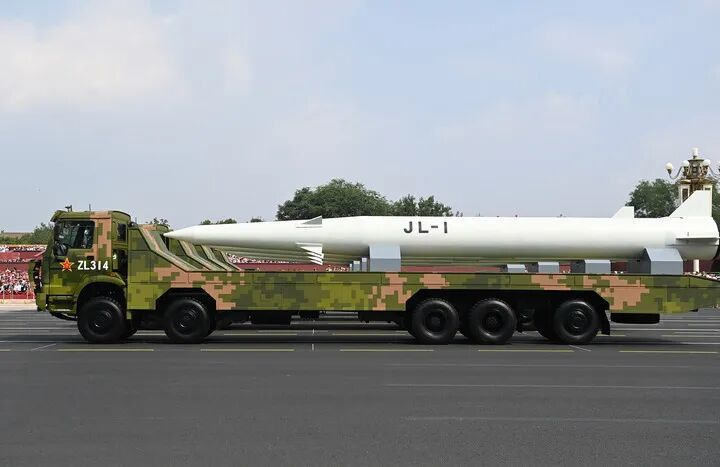
由抗战老兵及家属组成的方阵，平均年龄超过90岁，他们是历史的见证者，也是民族的英雄，接受祖国和人民的致敬。
展示了我国自主研发的多种新型武器装备，彰显了我国国防现代化建设的成就，以及保卫国家主权和领土完整的能力。
多国军乐团参与阅兵式，体现了世界反法西斯战争胜利是全人类的共同胜利，以及国际社会维护和平的共同愿望。
从抗战胜利阅兵到80周年阅兵，不仅是对历史的纪念，更是对民族精神的传承。它提醒我们，胜利来之不易，和平需要珍惜，中华民族的复兴之路离不开强大的国防和民族凝聚力。
阅兵展示了我国的国防力量，但这不是为了炫耀武力，而是为了传递"以武止戈"的和平理念。中国坚持走和平发展道路，同时也有能力捍卫国家主权、安全和发展利益，为世界和平与发展作出更大贡献。
历史照亮未来，和平需要捍卫
在北京人民大会堂举行纪念大会，在南京大屠杀纪念馆等多地举行祭扫活动，缅怀先烈，寄托哀思。
举办中日韩和平论坛、反法西斯历史研讨会等国际交流活动，促进历史认知，增进国际理解，共同维护世界和平。
整理出版抗战历史文献，公布一批新发现的历史资料，为研究历史、教育后人提供更加丰富的素材。
在中小学开展"抗战历史进校园"活动，通过讲座、展览、戏剧等形式，让青少年了解历史，铭记历史，培养爱国情怀。
组织青年志愿者开展"重走抗战路"实践活动，沿着当年的抗战路线，感受历史的厚重，传承革命精神。
支持创作以抗战历史为题材的影视作品、文学作品和艺术作品，用当代视角诠释历史，让历史记忆以更生动的方式传承。
"我们这代人经历了战争的苦难，更懂得和平的珍贵。希望年轻人永远记住历史，珍惜现在的和平生活，为国家的强大而努力。"
96岁
"学习历史不是为了记住仇恨，而是为了从历史中汲取智慧，避免战争重演。作为新时代青年，我们有责任传承和平理念，为构建人类命运共同体贡献力量。"
21岁
"世界反法西斯战争的胜利是全人类的共同胜利。各国应该铭记历史，加强合作，共同应对当前的全球性挑战，维护世界的和平与发展。"
历史学者
全国各地开展的纪念活动
在中国国家博物馆举办的"伟大胜利 历史贡献"主题展览，通过实物、照片、影像等多种形式，全面展现中国人民抗日战争的历史。
由中国交响乐团与多国音乐家联合演出，通过音乐表达对和平的赞美和对未来的期盼，纪念反法西斯战争胜利80周年。
来自世界各国的政治家、学者、和平人士齐聚一堂，就如何维护世界和平、促进共同发展等议题进行深入探讨和交流。
组织志愿者团队走访各地抗战老兵，录制口述历史视频，抢救性收集历史记忆，为研究和传承提供第一手资料。
组织青少年学生参观抗战纪念馆、革命旧址等红色教育基地，通过实地学习，加深对历史的理解，培养爱国情怀。
发动社会各界人士参与植树造林，每棵树象征着对和平的期盼，共同营造"和平之林"，传递绿色和平理念。